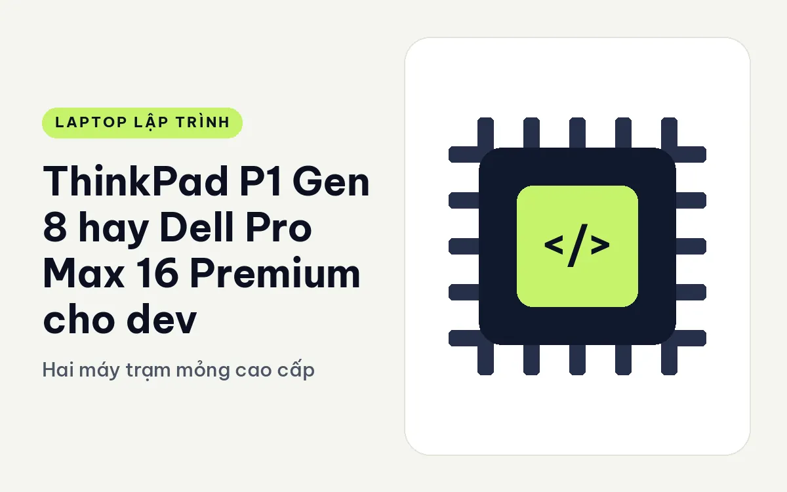
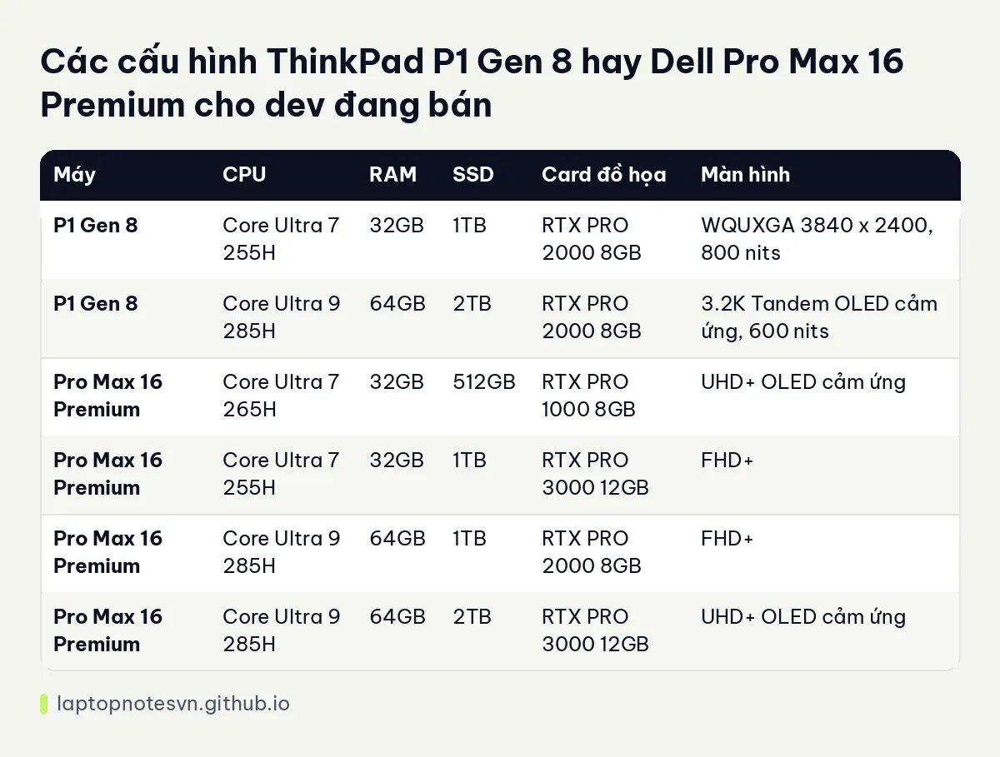

ThinkPad P1 Gen 8 hay Dell Pro Max 16 Premium cho dev - Hai máy trạm mỏng cao cấp

Đây là cuộc so tài giữa hai máy trạm 16 inch cố tình làm mỏng nhẹ, một của Lenovo, một của Dell. Cả hai nhắm vào người cần card RTX PRO nhưng không muốn mang cục gạch dày 30 mm. Chọn giữa chúng thường không dựa vào bảng thông số mà dựa vào thói quen: bạn quen bàn phím ThinkPad, hay quen hệ sinh thái Dell.
Bên Lenovo là ThinkPad P1 Gen 8, đời máy trạm mỏng của hãng.
Bên Dell là Dell Pro Max 16 Premium MA16250, nhánh cao cấp của dòng Pro Max 16 inch.
ThinkPad P1 Gen 8 và Dell Pro Max 16 Premium khác nhau ở vỏ máy
P1 Gen 8 nặng 1,84 kg, kích thước 354,3 x 241 mm, dày tối đa 20,6 mm. Pro Max 16 Premium nặng 2,19 kg, kích thước 353,8 x 240,28 mm, pin 96Wh. Hai máy gần như bằng nhau về diện tích mặt đáy, nhưng P1 nhẹ hơn khoảng 350 gam. Đó là mức chênh dễ cảm nhận khi bạn xách máy cả ngày.
Cổng của P1 gồm 1 USB-A, 1 Thunderbolt 4, 2 Thunderbolt 5 và HDMI 2.1. Pro Max 16 Premium có Thunderbolt 4 và Thunderbolt 5, HDMI 2.1 và RJ45, kèm Wi-Fi 7. Điểm khác dễ thấy: Dell có cổng mạng có dây, P1 thì không nằm trong danh sách cổng đã ghi. Nếu bạn cắm LAN thường xuyên, nên mang thêm bộ chuyển.
Về RAM, P1 dùng LPCAMM2 tối đa 64GB theo mô tả, thay được. Pro Max 16 Premium dùng LPDDR5x 32GB hoặc 64GB. Vì vậy P1 mềm dẻo hơn nếu bạn muốn nâng cấp sau này.
CPU, RAM và SSD của từng bản
| Máy | CPU | RAM | SSD | Card đồ họa | Màn hình |
|---|---|---|---|---|---|
| P1 Gen 8 | Core Ultra 7 255H | 32GB | 1TB | RTX PRO 2000 8GB | WQUXGA 3840 x 2400, 800 nits |
| P1 Gen 8 | Core Ultra 9 285H | 64GB | 2TB | RTX PRO 2000 8GB | 3.2K Tandem OLED cảm ứng, 600 nits |
| Pro Max 16 Premium | Core Ultra 7 265H | 32GB | 512GB | RTX PRO 1000 8GB | UHD+ OLED cảm ứng |
| Pro Max 16 Premium | Core Ultra 7 255H | 32GB | 1TB | RTX PRO 3000 12GB | FHD+ |
| Pro Max 16 Premium | Core Ultra 9 285H | 64GB | 1TB | RTX PRO 2000 8GB | FHD+ |
| Pro Max 16 Premium | Core Ultra 9 285H | 64GB | 2TB | RTX PRO 3000 12GB | UHD+ OLED cảm ứng |
Dell có bốn bản, trải rộng hơn từ RTX PRO 1000 đến 3000 12GB. Lenovo chỉ có hai bản, cùng dùng RTX PRO 2000 8GB. Nếu bạn cần VRAM 12GB để chạy mô hình lớn hơn, Dell là bên duy nhất trong hai máy có tuỳ chọn đó. Nếu 8GB đã đủ thì P1 nhẹ hơn và có RAM thay được.

Bản P1 Core Ultra 9 285H đi với màn 3.2K OLED cảm ứng, cùng 64GB RAM. Đây là cấu hình đáng thử nếu bạn làm cả code và thiết kế giao diện. Hai bản P1 đều có SSD PCIe Gen5, 1TB và 2TB, ghi trong dữ liệu cấu hình.
Chia theo kiểu việc lập trình
- Dev web, mobile, backend chạy Docker: hai máy đều dư sức, nên chọn theo trọng lượng và bàn phím.
- Dev AI nhẹ, thử mô hình nhỏ: P1 8GB VRAM đủ cho phần lớn thử nghiệm cơ bản. Dell cho thêm lựa chọn 12GB.
- Dev cần nhiều màn hình ngoài: cả hai có Thunderbolt 5, nhưng P1 có tới hai cổng Thunderbolt 5.
- Hay di chuyển: P1 nhẹ hơn rõ.
Màn hình, tản nhiệt và giá trị lâu dài
Màn WQUXGA của bản P1 thấp có độ sáng 800 nits, phủ 100% DCI-P3, hiệu chuẩn X-Rite, hỗ trợ HDR400. Bản cao dùng tấm Tandem OLED 3.2K, tần số quét 40 đến 120Hz và cảm ứng. Tấm Tandem OLED là kiểu OLED hai lớp, bền hơn và sáng hơn OLED thường, một lý do để bản này đắt hơn. Nếu bạn chủ yếu viết code ở chế độ tối, OLED rất dễ chịu cho mắt vì nền đen hoàn toàn.
Về lâu dài, dev cần nghĩ đến chuyện sửa chữa. RAM LPCAMM2 trên P1 thay được mà không cần hàn, còn LPDDR5x của Dell thì cố định theo cấu hình lúc mua. Bạn nên chọn Dell bản 64GB ngay từ đầu nếu muốn dùng nhiều năm, vì không có cách nâng sau.
Đối với bảo hành và hỗ trợ, cả hai hãng đều có dịch vụ doanh nghiệp, nên hãy hỏi cửa hàng về chính sách tại thời điểm mua. Dữ liệu cấu hình không nói về điều này nên bài viết không so sánh.
Chọn ThinkPad P1 Gen 8 hay Dell Pro Max 16 Premium
Chọn P1 Gen 8 nếu bạn cần máy nhẹ nhất có thể, thích bàn phím ThinkPad và muốn tự nâng RAM LPCAMM2. Bài P1 Gen 8 cho lập trình nói thêm về cách nó hợp với dev.
Chọn Pro Max 16 Premium nếu bạn cần GPU RTX PRO 3000 12GB, cổng RJ45 và nhiều cấu hình để chọn. Ghi chú riêng của máy này ở Pro Max 16 Premium cho lập trình.
Một mẹo nhỏ khi quyết: hãy xem bạn dùng chuột cảm ứng hay TrackPoint. Người đã quen núm đỏ giữa bàn phím thường rất khó đổi sang touchpad thuần. Chọn theo thói quen tay là cách tiết kiệm nhất để khỏi hối hận sau ba tháng.
Đăng ngày 09/11/2026